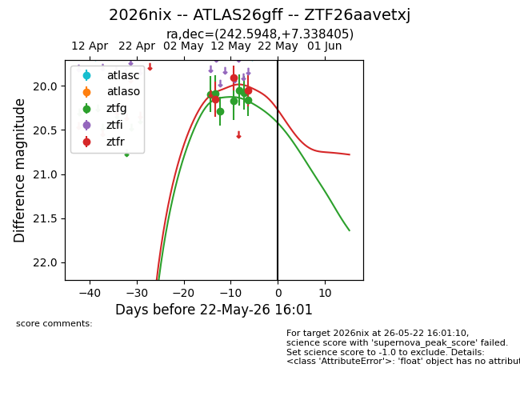
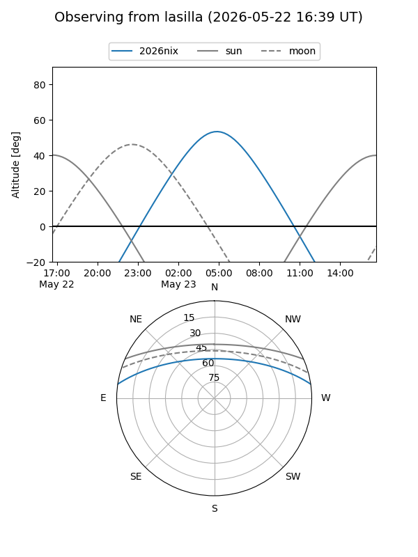
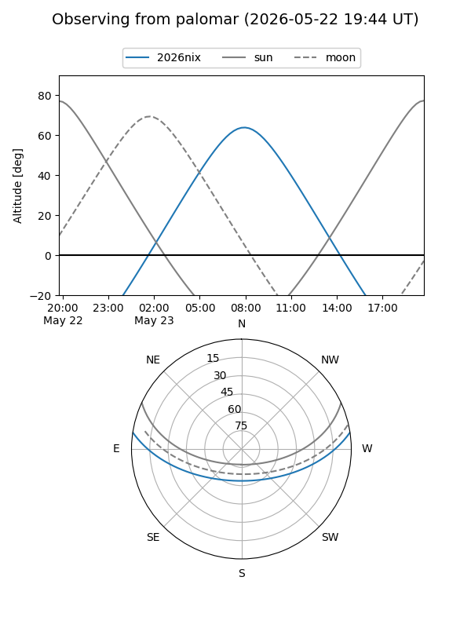
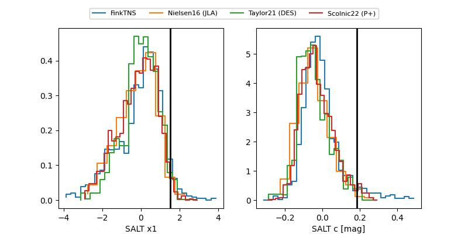

2026nix
Target 2026nix at 2026-05-22 16:02
Aliases and brokers:
lsst-FINK: link
lsst-Lasair: link
lsst-ALeRCE: link
ztf-FINK: link
ztf-Lasair: link
ztf-ALeRCE: link
TNS: link
YSE: link
alt names
ZTF26aavetxj (ztf,fink_ztf)
2026nix (tns,yse)
ATLAS26gff (atlas)
Coordinates:
equatorial (ra, dec) = 242.5948,+7.33840
equatorial (HMS+DMS) = 16:10:22.75,+07:20:18.26
galactic (l, b) = (19.6523,+38.95780)
Flags:
TNS confirmed: nan
Photometry:
last ztfg=20.16, ztfr=20.06
7 ztfg, 3 ztfr detections
Lightcurve

Visibility


Additional plots
